사람은 어느만큼의 땅이 필요한가
6/27/2015
요즘 출퇴근 시간에 톨스토이 단편선을 읽고 있다.
그 중 "사람에겐 얼마나 많은 땅이 필요한가" 는 악마에게 하루에 걸을 수 있는 만큼의 땅을 주겠다는 유혹을 받은 농부의 이야기다.
그 제안은 이렇다
농부의 걷는 속도가 일정하다고 하자. 그러면 하루 동안 걸을 수 있는 길이가 정해진다.
다시말해 이 문제는 특정한 길이를 가진 끈의 처음과 끝을 연결하여 만든 폐곡선의 넓이를 최대로 하려면 어떻게 해야 하는가 라고 서술할 수 있다.
그 중 "사람에겐 얼마나 많은 땅이 필요한가" 는 악마에게 하루에 걸을 수 있는 만큼의 땅을 주겠다는 유혹을 받은 농부의 이야기다.
그 제안은 이렇다
해가 떠서 질 때 까지 하루동안 걸어서 출발지로 돌아오면물론 톨스토이 선생은 이런 저런 교훈을 잔뜩 의도했겠지만, 그 구절을 읽으며 내 머릿 속에 떠오른 것은 구 상에서 폐곡선을 만들면 안과 밖은 정하기 나름 아닌가?
지나간 경로로 감싸진 땅을 모두 주겠다.
어떻게 걸어야 땅의 면적을 최대로 할 수 있을까였고 다음과 같이 생각해 보았다.
농부의 걷는 속도가 일정하다고 하자. 그러면 하루 동안 걸을 수 있는 길이가 정해진다.
다시말해 이 문제는 특정한 길이를 가진 끈의 처음과 끝을 연결하여 만든 폐곡선의 넓이를 최대로 하려면 어떻게 해야 하는가 라고 서술할 수 있다.
끈으로 최대의 넓이를 가지는 도형을 만들었다고 하자.
이때 끈 위의 한 점을 선택하여 \(x_{0}\) 이라고 하자. 그 다음 끈 위의 점 \(y_{0}\)을 끈을 따라 움직인 거리가 전체 끈 길이의 절반이 되도록 잡자.
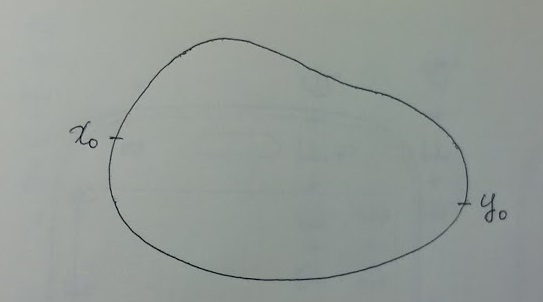
\(x_{0}\) 와 \(y_{0}\) 를 지나는 직선을 사용하여 폐곡선을 분할하면 분할된 두 부분의 넓이는 같다.
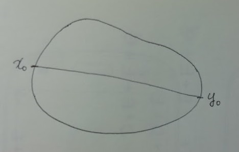
왜냐하면 어느 한 쪽이 더 클 경우 작은 쪽 대신 큰 쪽을 거울 대칭으로 이동하면 동일한 길이의 끈으로 더 큰 면적을 만들 수 있기 때문에 두 부분의 넓이는 같다.
이때 끈 위의 한 점을 선택하여 \(x_{0}\) 이라고 하자. 그 다음 끈 위의 점 \(y_{0}\)을 끈을 따라 움직인 거리가 전체 끈 길이의 절반이 되도록 잡자.
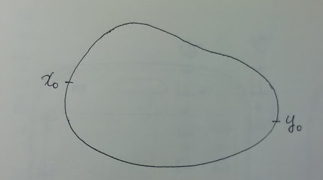
\(x_{0}\) 와 \(y_{0}\) 를 지나는 직선을 사용하여 폐곡선을 분할하면 분할된 두 부분의 넓이는 같다.
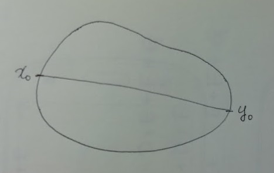
왜냐하면 어느 한 쪽이 더 클 경우 작은 쪽 대신 큰 쪽을 거울 대칭으로 이동하면 동일한 길이의 끈으로 더 큰 면적을 만들 수 있기 때문에 두 부분의 넓이는 같다.
다시 끈 위의 한 점 \(x_{1}\) 을 선택한 다음 같은 방식으로 \(y_{1}\) 를 찾아 다시 분할하는 직선을 만들자.
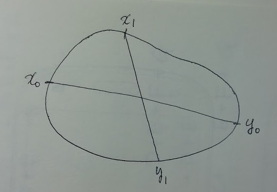
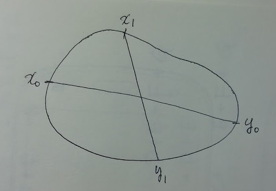
이렇게 끈 위의 임의의 점 \(x_{i}\)에 대해 상응하는 \(y_{i}\) 를 찾고 폐곡선의 면적을 정확히 이분할하는 직선을 결정할 수 있는데 이러한 직선들은 모두 한 점에서 만나게 된다.
한 점에서 만나지 않는다고 가정하면 아래와 같은 모양이 된다.
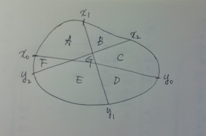
모든 분할은 면적을 반으로 나누므로
\( A + B + C + G = D + E + F \) (식1)
\( A + E + F + G = B + C + D \) (식2)
\( A + B + F = C + D + E + G \) (식3)
을 만족한다.
식 1, 2, 3을 모두 더하면
\( 3A + B + F + G = C + 3D + E \) (식4)
를 얻을 수 있고 (식4) 에서 (식2) 를 빼면
\( 2A - G = 2D - G \)
가 되어
\( A = D \) (식5)
를 얻는다.
다시 (식1) 과 (식2) 를 더하면
\( 2A + B + C + E + F + 2G \)
\( = B + C + 2D + E + F \) 가 되어
\( A + G = D \) 가 되는데,
\((식5)\) 에 의하여 \( G = 0 \) 이 된다.
따라서 한 점에서 만나게 된다.
한 점에서 만나지 않는다고 가정하면 아래와 같은 모양이 된다.
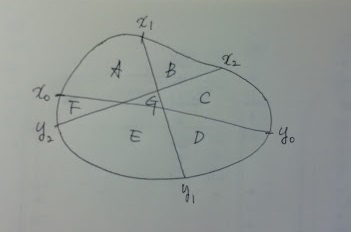
모든 분할은 면적을 반으로 나누므로
\( A + B + C + G = D + E + F \) (식1)
\( A + E + F + G = B + C + D \) (식2)
\( A + B + F = C + D + E + G \) (식3)
을 만족한다.
식 1, 2, 3을 모두 더하면
\( 3A + B + F + G = C + 3D + E \) (식4)
를 얻을 수 있고 (식4) 에서 (식2) 를 빼면
\( 2A - G = 2D - G \)
가 되어
\( A = D \) (식5)
를 얻는다.
다시 (식1) 과 (식2) 를 더하면
\( 2A + B + C + E + F + 2G \)
\( = B + C + 2D + E + F \) 가 되어
\( A + G = D \) 가 되는데,
\((식5)\) 에 의하여 \( G = 0 \) 이 된다.
따라서 한 점에서 만나게 된다.
모든 면적을 이분할하는 직선들이 만나는 점을 C 라고 하자.
이때 \( x_{i} \) 에서 C 까지의 거리를 \( m_{i} \), \( y_{i} \) 에서 C 까지의 거리를 \( n_{i} \) 라고 하자.
면적을 이분할하는 직선 2개를 선택하여 \( x_{i} \) 와 \( y_{i} \) 를 포함하는 영역을 만들자.
그리고 \( x_{i} \), \( y_{i} \) 를 잇는 직선에 직교하고 C를 지나는 직선을 기준으로 접어올리자.
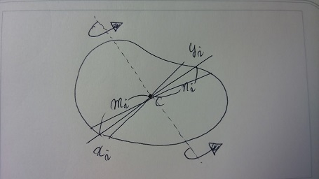
이때 \( x_{i} \) 에서 C 까지의 거리를 \( m_{i} \), \( y_{i} \) 에서 C 까지의 거리를 \( n_{i} \) 라고 하자.
면적을 이분할하는 직선 2개를 선택하여 \( x_{i} \) 와 \( y_{i} \) 를 포함하는 영역을 만들자.
그리고 \( x_{i} \), \( y_{i} \) 를 잇는 직선에 직교하고 C를 지나는 직선을 기준으로 접어올리자.
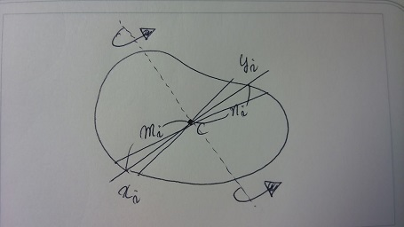
이때 \( x_{i} \) 와 \( y_{i} \) 를 지나는 폐곡선은 반드시 교점이 있어야 한다.
왜냐하면 아래와 같이 교점 P 가 존재하지 않는 경우 면적이 같을 수 없다.
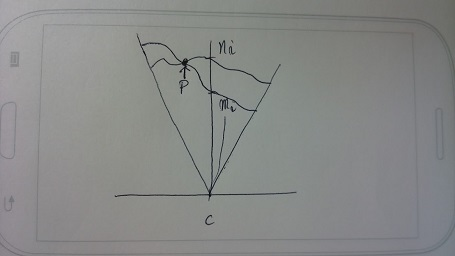
왜냐하면 아래와 같이 교점 P 가 존재하지 않는 경우 면적이 같을 수 없다.
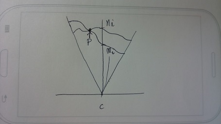
그런데 이 부채꼴 모양은 \( x_{i} \pm \delta \) 와 \( y_{i} \pm \mu \) 를 잇는 직선에 의해 결정되는데 \( \delta , \mu \)의 값을 임의의 수 보다 작게 설정할 수 있으므로 모든 영역에 대해 접점을 가져야만 한다. 따라서 \( n_{i} \) 와 \( m_{i} \) 는 임의의 i 에 대해 같으며 이런 경우는 중점 C 에서 동일한 거리를 가지는 도형이므로 원이 된다.
따라서 농부는 출발점에서 자신의 걷는 속도 * 해가 떠 있는 시간 만큼의 거리를 둘레로 가지는 원을 그리며 걸어야 한다.
어째 답을 생각하는 것 보다 이렇게 정리하여 쓰는 게 더 일이다.
아이고 귀찮아.
아이고 귀찮아.